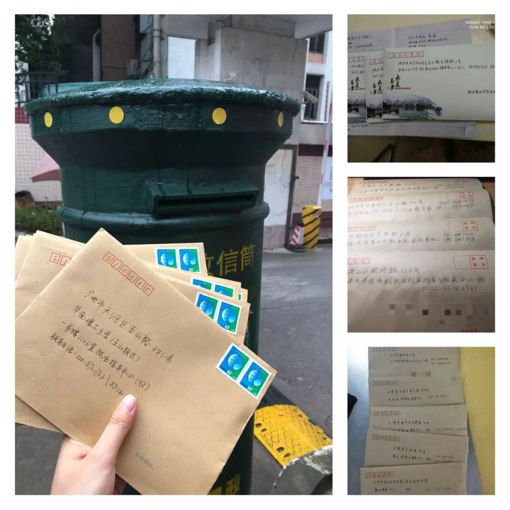
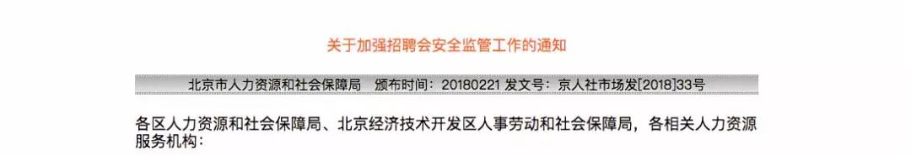
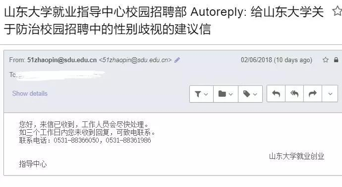
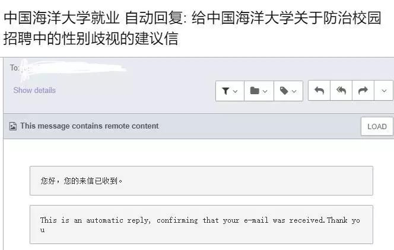

校友向75所高校呼吁：校招现场应设立就业歧视投诉窗口

6月10日，23位高校校友向全国75所高校发出呼吁，高校应当在校园招聘会现场设立就业歧视投诉窗口，并监管校园招聘中的性别歧视。多封建议信纷纷寄往学校。
这项建议，参考了北京市人力资源和社会保障局今年发布的文件。

……

2018年2月，北京市人力资源和社会保障局发布《关于加强招聘会安全监管工作的通知》，要求办会机构必须严格审查招聘单位的资质、招聘内容和相关宣传资料；招聘单位的招聘内容必须真实合法，不得有民族、宗教、性别等歧视性条件；并且要在招聘会现场设立就业歧视投诉窗口。
可是，有许多报道却反映出，举报窗口的规定并没有很好的落实。藏在角落的意见箱、无人管理的意见箱，就像是一件为了应对规定的摆设。

藏在角落的意见箱
《广州高校校园招聘性别歧视调查报告2017》提到，在向高校举报校园招聘中的性别歧视时，调查员选择了电话、信件、网络投诉等不同的方式。但统一反应出来的情况却是缺乏管理、回应滞后。
这些调查说明，仅仅只有规定是不够的，要让就业歧视投诉窗口真正发挥功效，要让校园招聘中的性别歧视得到有效监管，还需其它可行的措施。
考虑到这些情况，此封建议信共提出了以下4点建议：
除了实体信外，校友们还尝试往学校电子邮箱邮递建议信。但只收到冷冰冰的自动回复。


至今，只有中国石油大学（北京）电话回复，学校说之后会留意校招中的歧视现象。之后会再给纸质回复。
这些校友表示会继续跟进，督促校方重视校园招聘中性别歧视的严峻现状，并积极解决问题。
这项调查发现高达86.5%的女性受到过一种或多种招聘性别歧视，其中有64.1%的女性遭遇过5种及以上的性别歧视，另有33.4%的男性承认在招聘中存在性别歧视。
这项报告表明，超过81%的女性认为就业存在性别歧视，其中22%的女性认为就业中性别歧视现象严重。
来自报告研究合作机构领英（LinkedIn）的数据显示，男性在教育、健康、福利事业等领域较为稀缺，女性在工程、制造、建筑、信息、通信等方面代表性不足。行业人才分布失衡现象不光是人才储备问题，在各行各业中男性都占据了绝大多数岗位的领导位置。
这份报告于2017年发布。报告提出超过9成招聘会存在性别歧视，限定录用男性的职位远多于限定录用女性的职位，男性的薪酬和发展前景也普遍优于女性。同时指出，高校的监管不足，存在招聘会前审核不严谨，对现场监查不力，缺乏后期管理等问题。
2015年，麦肯锡全球研究院发布的这项报告指出，若中国能够在2025年提升25%的女性经济参与度，本国GDP可增长2.5万亿美元，同期全球GDP亦可增长5.3万亿美元。